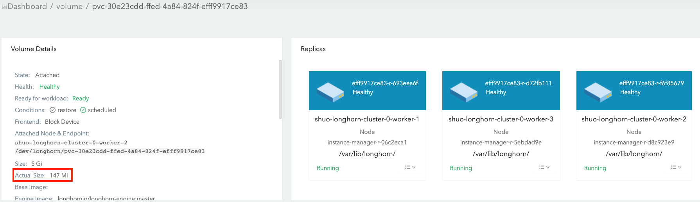
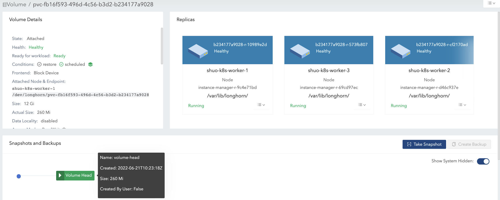
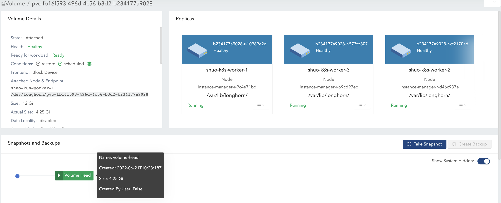

|
Ce document a été traduit à l'aide d'une technologie de traduction automatique. Bien que nous nous efforcions de fournir des traductions exactes, nous ne fournissons aucune garantie quant à l'exhaustivité, l'exactitude ou la fiabilité du contenu traduit. En cas de divergence, la version originale anglaise prévaut et fait foi. |
|
Il s'agit d'une documentation non publiée pour SUSE® Storage 1.12 (Dev). |
Taille du volume
Volume Size :

Cette valeur, que vous avez spécifiée lors de la création du volume, représente la quantité d’espace disponible pour le volume lorsqu’il est utilisé.
Voici d’autres façons de comprendre ce concept :
-
Le volume lui-même est simplement un objet CRD Kubernetes et les données du volume sont stockées dans des répliques. Cette valeur représente la taille nominale de chaque réplique.
-
SUSE Storage répliques utilisent fichiers épars pour stocker des données. Cette valeur représente la taille maximale à laquelle un fichier épars peut s’étendre.
Les répliques sont programmées sur des nœuds disposant d’un espace alloué suffisant pour couvrir cette taille nominale lors de la création du volume. Pour plus d’informations, voir Utilisation de l’espace des nœuds.
|
La taille maximale du volume est basée sur le système de fichiers du disque (par exemple, 16383 GiB pour |
Volume Actual Size

Cette valeur représente la quantité d’espace utilisée par chaque réplique (y compris la tête du volume et les instantanés) sur le nœud.
Comme toutes les données historiques (stockées dans les instantanés) et les données actives sont incluses dans le calcul, cette valeur peut dépasser la taille nominale définie par l’utilisateur.
L’interface utilisateur SUSE Storage affiche cette valeur uniquement lorsque le volume est en cours d’exécution.
Par exemple :
Dans cet exemple, nous expliquerons comment le volume size et actual size changent après un certain nombre d’opérations liées aux E/S et aux instantanés.
L’illustration présente l’organisation des fichiers de une réplique. La tête du volume et les instantanés sont en réalité des fichiers épars, comme nous l’avons mentionné ci-dessus.

-
Créez un volume de 12 Gi avec une seule réplique, puis attachez-le et montez-le sur un nœud. Voir la figure 1 de l’illustration.
-
Pour le volume vide, la taille nominale
sizeest de 12 Gi et leactual sizeest presque 0. -
Il y a des informations méta dans le volume, donc le
actual sizeest de 260 Mi et n’est pas exactement 0.
-

-
Écrivez 4 Gi de données (data#0) dans le point de montage du volume. Le
actual sizeest augmenté de 4 Gi en raison des blocs alloués dans la réplique pour les 4 Gi de données. Pendant ce temps, la commandedfdans le système de fichiers montre également les 4 Gi d’espace utilisé. Voir la figure 2 de l’illustration.

-
Supprimez les 4 Gi de données. Ensuite, la commande
dfmontre que l’espace utilisé du système de fichiers est presque 0, mais leactual sizereste inchangé.Les utilisateurs peuvent voir par défaut que le volume
actual sizen’est pas réduit après la suppression des 4 Gi de données. SUSE Storage est un système de stockage au niveau des blocs. Par conséquent, la suppression dans le système de fichiers ne fait que marquer les blocs appartenant au fichier supprimé comme inutilisés. Actuellement, SUSE Storage n’appliquera pas automatiquement/périodiquement les opérations TRIM/UNMAP. Si vous souhaitez effectuer un trim du système de fichiers, veuillez consulter ce document pour plus de détails.
-
Ensuite, réécrivez les 4 Gi de données (data#1), et la commande
dfdans le système de fichiers montre à nouveau 4 Gi d’espace utilisé. Cependant, leactual sizeest augmenté de 4 Gi et devient 8,25 Gi. Voir la figure 3(a) de l’illustration.Après la suppression, le système de fichiers peut ou non réutiliser les blocs récemment libérés des fichiers récemment supprimés selon la conception du système de fichiers, et veuillez vous référer à Stratégies d’allocation de blocs de divers systèmes de fichiers. Si le
sizenominal du volume est de 12 Gi, leactual sizeà la fin varierait de 4 Gi à 8 Gi puisque le système de fichiers peut ou non réutiliser les blocs libérés. D’autre part, si lesizenominal du volume est de 6 Gi, leactual sizeà la fin varierait de 4 Gi à 6 Gi, car le système de fichiers doit réutiliser les blocs libérés lors du 2ème cycle d’écriture. Voir la figure 3(b) de l’illustration.Ainsi, allouer un
sizenominal approprié pour un volume qui supporte des tâches d’écriture lourdes selon le modèle d’E/S rendrait l’utilisation de l’espace disque plus efficace.

-
Prenez un instantané (snapshot#1). Voir la Figure 4 de l’illustration.
-
Les données#1 sont maintenant stockées dans l’instantané#1.
-
La taille de la nouvelle tête de volume est presque nulle.
-
Avec la tête de volume et l’instantané inclus, le
actual sizereste à 8,25 Gi.
-

-
Supprimez les données#1 du point de montage.
-
Les informations relatives à la suppression au niveau du système de fichiers pour data#1 sont stockées dans le fichier actuel de la tête du volume. Pour l’instantané#1, les données#1 sont toujours conservées en tant que données historiques.
-
Le
actual sizeest toujours à 8,25 Gi.
-
-
Écrivez 8 Gi de données (données#2) dans le point de montage du volume, puis prenez un autre instantané (instantané#2). Voir la figure 5 de l’illustration.
-
Maintenant, le
actual sizeest de 16,2 Gi, ce qui est supérieur à la taille nominalesizedu volume. -
Du point de vue d’un système de fichiers, la partie qui se chevauche entre les deux instantanés est considérée comme les blocs qui doivent être réutilisés ou écrasés. Mais en termes de SUSE Storage, ces blocs sont en réalité des blocs frais conservés dans un autre instantané/tête de volume. Voir les 2 instantanés dans la figure 6.
La tête de volume ne contient que les dernières données du volume, tandis que chaque instantané peut stocker à la fois des données historiques et actives, consommant au maximum l’espace spécifié. Par conséquent, le volume
actual size, qui est la somme des tailles de la tête de volume et de tous les instantanés, est potentiellement plus grand que la taille spécifiée par les utilisateurs.Même si les utilisateurs ne prennent pas d’instantanés pour les volumes, il existe des opérations comme la reconstruction, l’expansion ou la sauvegarde qui entraîneraient la création d’instantanés (cachés) du système. En conséquence, le volume
actual sizeétant plus grand que la taille est inévitable dans certains cas d’utilisation. -

-
Supprimez l’instantané#1 et attendez que la purge de l’instantané soit terminée. Voir la figure 7 de l’illustration.
-
Ici, SUSE Storage fusionne en réalité l’instantané#1 avec l’instantané#2.
-
Pour la partie qui se chevauche lors de la fusion, les données les plus récentes (données#2) seront conservées dans les blocs. Ensuite, certaines données historiques sont supprimées et le volume est réduit (de 16,2 Gi à 11,4 Gi dans l’exemple).
-

-
Supprimez toutes les données existantes (données#2) et écrivez 11,5 Gi de données (données#3) dans le point de montage du volume. Voir la figure 8 de l’illustration.
-
Cela fait que la taille réelle de la tête du volume devient 11,5 Gi et que la taille totale réelle du volume devient 22,9 Gi.
-

-
Essayez de supprimer le seul instantané (instantané#2) du volume. Voir la figure 9 de l’illustration.
-
L’instantané directement derrière l’en-tête du volume ne peut pas être nettoyé. Si les utilisateurs essaient de supprimer ce type d’instantané, SUSE Storage marquera l’instantané comme étant en cours de suppression, le cachera, puis essaiera de libérer la partie qui se chevauche entre l’en-tête du volume et l’instantané pour le fichier d’instantané. La dernière opération s’appelle la purge de l’instantané dans SUSE Storage et est disponible depuis la version v1.3.0.
-
Puisque dans l’exemple, l’instantané et l’en-tête du volume utilisent la plupart de l’espace nominal, la partie qui se chevauche est presque égale à la taille réelle de l’instantané. Après l’élagage, la taille réelle de l’instantané est réduite à 259 Mi et le volume est réduit de 22,9 Gi à 11,8 Gi.
-

Ici, nous résumons les points importants liés à l’utilisation de l’espace disque que nous avons dans l’exemple :
-
Les blocs inutilisés ne sont pas libérés.
SUSE Storage n’émettra pas d’opérations TRIM/UNMAP automatiquement. Ainsi, la suppression de fichiers des systèmes de fichiers ne conduira pas à une diminution/réduction de la taille réelle du volume. Vous devrez peut-être consulter la doc et le gérer vous-même si nécessaire.
-
Les blocs alloués mais inutilisés ne sont pas réutilisés.
Supprimer puis écrire de nouveaux fichiers entraînerait une augmentation continue de la taille réelle. Puisque le système de fichiers peut ne pas réutiliser les blocs récemment libérés des fichiers récemment supprimés. Ainsi, allouer une taille nominale appropriée pour un volume qui gère des tâches d’écriture lourdes selon le modèle IO rendrait l’utilisation de l’espace disque plus efficace.
-
En supprimant des instantanés, la partie chevauchante des blocs utilisés pourrait être éliminée, que les blocs soient récemment libérés par le système de fichiers ou qu’ils contiennent encore des données historiques.
Suggestions de configuration d’espace pour les volumes
-
Réservez suffisamment d’espace libre sur les disques en tant que tampons au cas où la taille réelle des volumes existants continuerait à croître.
-
Une estimation générale de la consommation maximale d’espace d’un volume est
(N + 1) x head/snapshot average actual size
-
où
Nest le nombre total d’instantanés que le volume contient (y compris la tête du volume), et le1supplémentaire est pour l’espace temporaire qui peut être requis lors de la suppression d’instantanés. -
La taille réelle moyenne des instantanés varie et dépend des cas d’utilisation. Si des instantanés sont créés périodiquement pour un volume (par exemple, en s’appuyant sur des tâches récurrentes d’instantanés), la valeur moyenne serait la taille moyenne des données modifiées pour le volume dans l’intervalle de création d’instantanés. S’il y a des tâches d’écriture lourdes pour les volumes, la taille réelle moyenne de la tête d’instantané serait égale à la taille nominale du volume. Dans ce cas, il est préférable de définir
Storage Over Provisioning Percentagepour qu’il soit inférieur à 100 % afin d’éviter l’épuisement de l’espace disque. -
Quelques cas étendus :
-
Il y a une tâche récurrente d’instantanés dont le nombre de rétentions est
N. La formule peut alors être étendue à :(M + N + 1 + 1 + 1 + 1) x head/snapshot average actual size
-
L’explication de la formule :
-
Mcorrespond aux instantanés créés manuellement par les utilisateurs. Les tâches récurrentes ne sont pas responsables de la suppression de ce type d’instantané. Ils ne peuvent être supprimés que par les utilisateurs. -
Nest le nombre de rétentions de la tâche récurrente d’instantanés. -
Le 1er
1signifie la tête du volume. -
Le 2ème
1signifie l’instantané supplémentaire créé par la tâche récurrente. Puisque la tâche récurrente crée toujours un nouvel instantané, elle supprime ensuite l’instantané le plus ancien lorsque le nombre d’instantanés qu’elle a créés dépasse le nombre de rétentions. Avant que la suppression ne commence, il y a un instantané supplémentaire qui peut occuper un espace disque supplémentaire. -
Le 3ème
1est l’instantané système. Si la reconstruction est déclenchée ou si l’expansion est lancée, SUSE Storage créera un instantané système avant de commencer les opérations. Et cet instantané système peut ne pas être nettoyé immédiatement. -
Le 4ème
1correspond à l’espace temporaire qui peut être requis lors de la suppression ou de l’épuration des instantanés.
-
-
-
Les utilisateurs ne veulent aucun instantané. Ni l’instantané (créé manuellement) ni la tâche récurrente ne seront lancés. Supposons que paramètre _Nettoyage Automatique des Instantanés Générés par le Système soit activé, alors la formule deviendrait :
(1 + 1 + 1) x head/snapshot average actual size
-
Le pire scénario qui entraîne une utilisation excessive de l’espace :
-
À un moment donné, la 1ère reconstruction/l’expansion est déclenchée, ce qui entraîne la création du 1er instantané système.
-
Les purges avant et après la 1ère reconstruction ne font rien.
-
-
Des données sont écrites dans la tête du nouveau volume, et la 2ème reconstruction/l’expansion est d’une manière ou d’une autre déclenchée.
-
La purge des instantanés avant la 2ème reconstruction peut entraîner la réduction du 1er instantané système.
-
Ensuite, le 2ème instantané système est créé et la reconstruction est lancée.
-
Après la reconstruction terminée, la purge subséquente des instantanés entraînerait la fusion des 2 instantanés système. Cette fusion nécessite un espace temporaire.
-
-
Lors de la purge des instantanés après la 2ème reconstruction, plus de données sont écrites dans la tête du nouveau volume.
-
-
L’explication de la formule :
-
Le 1er
1signifie la tête du volume. -
Le 2ème
1est le deuxième instantané système mentionné dans le pire scénario. -
Le 3ème
1correspond à l’espace temporaire qui peut être requis lors de la purge ou de la fusion des 2 instantanés système.
-
-
-
-
-
-
Ne conservez pas trop d’instantanés pour les volumes.
-
Nettoyer les instantanés aidera à récupérer de l’espace disque. Il existe deux façons de nettoyer les instantanés :
-
Supprimez les instantanés manuellement via l’interface SUSE Storage.
-
Configurez une tâche récurrente d’instantanés avec une rétention de 1, puis les instantanés seront nettoyés automatiquement.
De plus, notez que l’espace supplémentaire, jusqu’à la capacité nominale du volume
size, est requis lors du nettoyage et de la fusion des instantanés. -
-
Choisissez un volume nominal approprié (
size) en fonction des charges de travail.
Dépannage
La charge de travail rencontre une erreur no space left on device
Pour résoudre l’erreur “no space left on device”, vous devez comprendre que la différence entre un volume plein et des disques de nœud pleins est cruciale pour une gestion appropriée du stockage dans SUSE Storage.
Volume plein
Un volume est plein lorsque son système de fichiers monté a atteint sa limite de capacité. * Les écritures de données échouent avec des erreurs “no space left on device”. * Le disque hôte pour la réplique du volume peut encore avoir de l’espace disponible pour d’autres volumes.
-
Caractéristiques :
-
La commande
dfmontre une utilisation de 100 % pour le système de fichiers monté. -
Les applications ne peuvent pas écrire de nouvelles données au point de montage du volume.
-
Exemple :
$ df -h /mnt/longhorn-volume-example-dir
Filesystem Size Used Avail Use% Mounted on
/dev/longhorn-volume-example 12G 12G 0 100% /mnt/longhorn-volume-example-dirDisque de nœud plein
Les disques de nœud peuvent ne pas avoir suffisamment d’espace pour accueillir les opérations sur les volumes car les volumes sont provisionnés de manière fine, et les tailles des répliques continuent de croître. * Les écritures de données échouent avec des erreurs “no space left on device”, même si le système de fichiers du volume n’est pas plein. * Les opérations sur les volumes telles que la création, l’expansion et la gestion des snapshots peuvent être limitées. * Les répliques de volume nouvellement créées ne peuvent pas être programmées sur les disques pleins.
-
Caractéristiques :
-
Les applications ne peuvent pas écrire de nouvelles données au point de montage du volume même si le volume n’est pas plein.
-
Les opérations SUSE Storage sur ces disques, telles que la création de répliques, la reconstruction ou les opérations d’instantané, peuvent échouer.
-
Les volumes avec des répliques sur ces disques de nœud sont affectés.
-
Protection de l’intégrité des données pour les scénarios de disques à court d’espace
Lorsque plusieurs répliques rencontrent simultanément des erreurs “no space left on device”, SUSE Storage met en œuvre la protection de l’intégrité des données. Si toutes les répliques écrites se trouvent sur des disques qui sont à court d’espace, le système préserve le maximum de répliques ayant écrit la même quantité de données (le nombre d’octets écrits le plus élevé). Cela garantit la cohérence des données :
-
Retenant le maximum de répliques ayant écrit la même quantité de données. Cela évite d’énormes opérations de reconstruction de répliques, permet une reconstruction efficace lorsque les disques des nœuds récupèrent des problèmes de manque d’espace et garantit que les utilisateurs peuvent toujours lire les données de manière cohérente.
-
Marquant d’autres répliques comme
ERRpour prévenir la corruption des données. Cela garantit que les utilisateurs peuvent lire les données de manière cohérente à partir des répliques conservées, et les répliques marquées commeERRseront reconstruites à partir des répliques conservées pour maintenir l’intégrité des données lorsque les disques des nœuds récupèrent des problèmes de manque d’espace. -
Maintenir l’accessibilité du volume même lorsque tous les disques sous-jacents sont pleins.
Par exemple, si les répliques A, B et C rencontrent des erreurs d’espace après avoir écrit respectivement 1 Mo, 2 Mo et 2 Mo, les répliques B et C resteront actives tandis que la réplique A sera marquée comme ERR.
Solutions
Lors de la rencontre de l’erreur no space left on device, vérifiez d’abord l’utilisation du système de fichiers du volume, puis vérifiez le disque hébergeant la réplique du volume.
-
Vérifiez l’utilisation du système de fichiers du volume : Si l’utilisation du système de fichiers du volume est de 100 % (en utilisant la commande suivante) :
df -h /mnt/your-volumeVous devez développer le volume ou supprimer des fichiers inutiles du système de fichiers.
-
Vérifiez l’utilisation du disque du nœud SUSE Storage : Vérifiez l’utilisation du disque dans l’interface SUSE Storage sous Node > Node Disk ou utilisez la ligne de commande :
# Check through SUSE Storage UI: Node > Node Disk # Or check the data path mount point df -h /var/lib/longhorn # default data pathSi l’utilisation du disque est de 100 %, suivez ces étapes pour récupérer les charges de travail :
-
Réduisez la charge de travail.
-
Augmentez la taille du disque, ou supprimez des fichiers inutiles tels que répertoires de répliques orphelines et images de sauvegarde utilisées, sur le disque.
-
Augmentez la charge de travail.
-